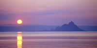
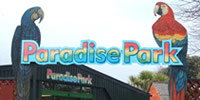
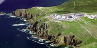
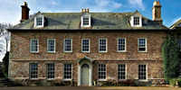
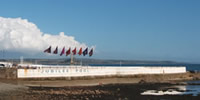
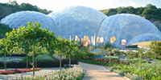

Attractions in and around Penzance
Penzance and Penwith are the tourist hotspot of the south west, and with good reason. Stunningly beautiful coast and countryside, long hot summers, intriguing history,excellent transport links and an abundance of tourist attractions.
Below, some of the best places to visit in Penzance & Penwith are explained in a easy to use format with useful information such as web links & contact information

St. Michael's MountSt. Michael's Mount is one of Penwith's most cherished sights, and one of the most photographed places in England. The island is set.... |
Geevor Tin MineGeevor was the last working tin mine in West Penwith closing in 1990. Situated in a spectacular setting on cliffs above the Atlantic Ocean, the workings eventually stretched..... |

Paradise Park Bird SanctuaryParadise Park, situated in Hayle, was opened in 1973 as a tropical bird garden, the collection starting with owls, eagles, cranes, peacocks and parrots..... |

Minack TheatreThe Minack Theatre is an open-air theatre, constructed above a gully with a rocky granite outcrop jutting into the sea. The Minack was the brainchild and life long passion...... |

Land's EndIt's a memory you'll cherish forever - arriving like so many generations before you at one of the world's best loved landmarks. It's a place of almost mystical beauty..... |
|

Trereife House & GardensTrereife is on the outskirts of Newlyn and is a hidden gem, a Queen Anne manor house of considerable beauty set amid the parterres and terraces of a classic Cornish Garden. |

Jubilee Open Air Bathing PoolDescribed as one of the most unusual and pleasingly designed lidos of the era, the Jubilee Pool was designed in the early 1930s. The pool was opened with great celebration..... |

The Eden ProjectThe Eden Project is a large-scale environmental complex in Cornwall. It is an educational charity trying out new ideas and ways of thinking. The project is located in a reclaimed..... |
images - see individual pages